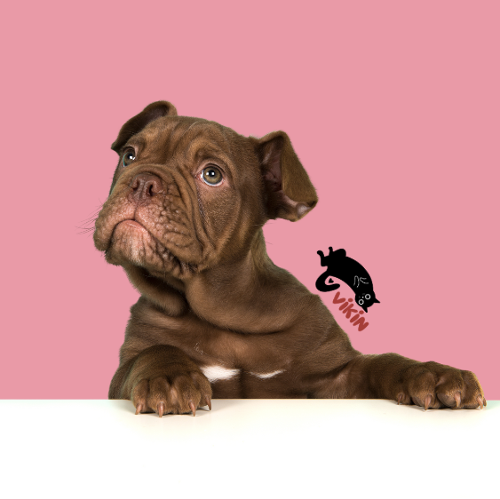
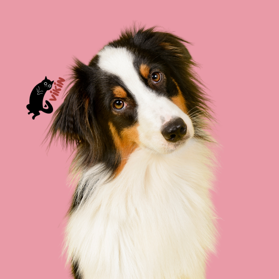
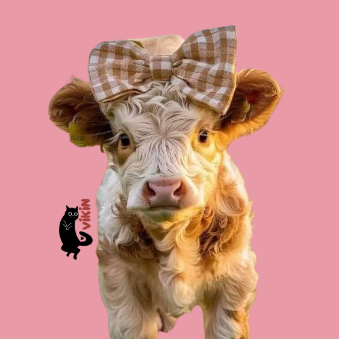
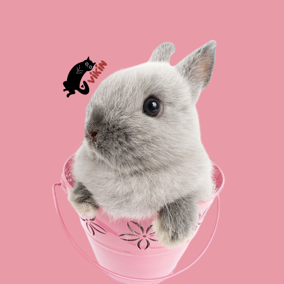
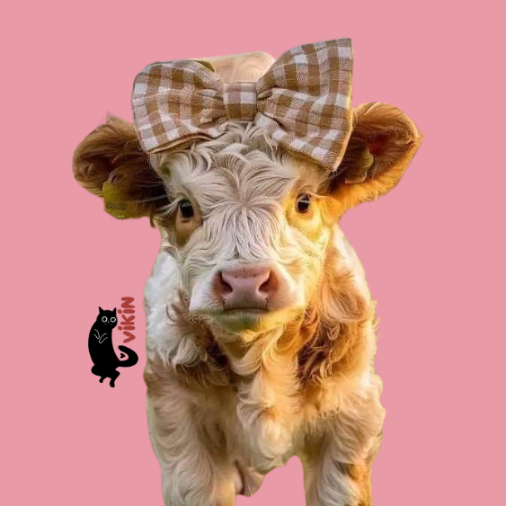
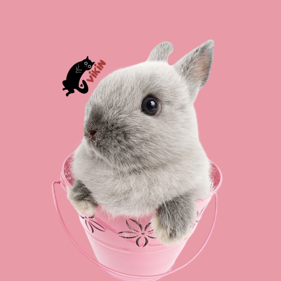

Cachorro fofo Gato fofo Gato laranja fofo Cachorro fofo Cachorro fofo
Quer encontrar o pet perfeito para seu estilo de vida? Siga os passos abaixo:
- Acesse o Teste de Compatibilidade
- Responda ao questionário:
- Leve apenas alguns minutos para responder a perguntas sobre sua rotina, personalidade e
ambiente doméstico.
- Seja sincero nas respostas para garantir que nossa recomendação seja a mais precisa
possível.
- Receba sua recomendação personalizada:
- Com base nas suas respostas, nosso sistema irá sugerir os pets mais compatíveis
disponíveis
em ONGs parceiras.
- Conheça seu futuro companheiro:
- Explore os perfis dos pets sugeridos, veja fotos, e saiba mais sobre suas personalidades
e
histórias.
- Entre em contato com a ONG:
- Quando encontrar o pet ideal, entre em contato diretamente com a ONG responsável para
iniciar o processo de adoção.
- Leve apenas alguns minutos para responder a perguntas sobre sua rotina, personalidade e ambiente doméstico.
- Seja sincero nas respostas para garantir que nossa recomendação seja a mais precisa possível.
- Com base nas suas respostas, nosso sistema irá sugerir os pets mais compatíveis disponíveis em ONGs parceiras.
- Explore os perfis dos pets sugeridos, veja fotos, e saiba mais sobre suas personalidades e histórias.
- Quando encontrar o pet ideal, entre em contato diretamente com a ONG responsável para iniciar o processo de adoção.
Está pronto para encontrar seu novo melhor amigo?
Comece o teste agora e descubra o pet perfeito para você!

 



Cachorro fofo Cachorro fofo Vaca laranja fofa Coelho fofo
Nosso site não é apenas uma plataforma de adoção, mas um facilitador de encontros felizes e duradouros. Queremos transformar o processo de adoção em uma experiência personalizada, assegurando que cada pet encontre o lar perfeito e que cada adotante encontre um companheiro que se encaixe perfeitamente em sua vida.
Benefícios:
- Adoção Consciente: Ao alinhar as expectativas do adotante com as necessidades do pet, o site ajuda a reduzir o número de devoluções e abandonos.
- Suporte às ONGs: Facilita a conexão entre as ONGs e adotantes em potencial, ajudando a aumentar as taxas de adoção e oferecendo uma nova chance para muitos animais.
- Bem-estar Animal: Ao garantir que cada pet encontre um lar compatível, promovemos o bem-estar e a felicidade dos animais, criando lares duradouros e amorosos.